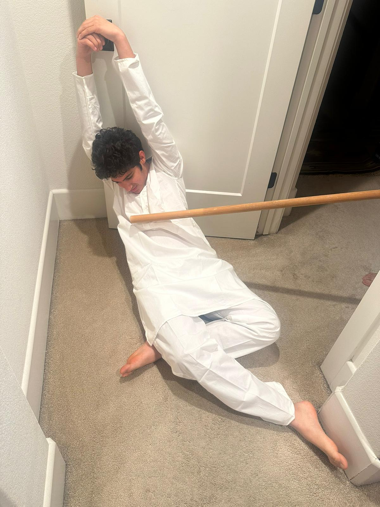

We emailed our congressional representative, Eric Swalwell about this topic. This follows the form of civic participation of contacting and communicating with a public official. In our email, we gave Representative Swalwell some basic information about our organization, Stand Up To Terrorism and why we founded it (a picture of the form through which we contacted him, alongside a draft of the actual content of the message, are shown to the left and the top of the picture gallery). We then went on to explain how we'd like him to record a brief video and show his support for our mission, thereby helping to raise awareness about the serious nature of terrorism. This is an effective form of civic participation as gaining insights from a credible and reputable man will lend credibility to our organization, a clear ethos appeal.
In addition to contacting Representative Swalwell, we also created an opinion form. This form was completed by 45 students, mainly freshmen, at our high school, and consisted of around a dozen questions apropos terrorism and related threats. Shown on the left are some visual aids for some of the insights to be provided based on the data we collected.
Firstly, 20% of respondees claimed to be worried or very worried about terrorist attacks affecting them. Close to 80% said that America must work hard to fight against terrorism due to tragedies like the 9/11 terror attacks, while half of the pollees supported additional funding for US attacks against terrorists. A vast majority also supported maintaining or even increasing TSA checks at airports (and similar safety procedures). Nearly half, in fact, were strongly in favor of this. Overall, as shown by some of the snapshots of the poll to the left, most respondees thought that there should be no discrimination against Muslims and others often suspected of terrorism, but notably still did say that they would continue to cooperate with authorities to help capture and eliminate terrorists. Between a quarter and a fifth said that capturing terrorists would even be worth the lives of innocent non-Americans and Americans alike, which goes to show just how important this issue is.
Overall, this survey was a great form of civic participation because it really shed light on how Americans perceive terrorism and dangers associate with it. Also revealed were the degrees of support for measures like monitoring phone calls and increasing spending, which show how far Americans are willing to go to combat terrorism.
- Caden Wang
One strategy for seeking change we implemented was having one of our members, namely Veer Mahajan, tortured in a prison run by terrorists. His freedom was bought by our organization after one week of his being missing, and he was flown back to the United States, where he is still healing. While this measure was certainly extreme, it showed just how dangerous terrorism is, and just how threatened ordinary Americans are. While this is far from a traditional application of this strategy, it befits the circumstances, which are equally extreme. Other strategies for seeking change, like demonstrations, do not to justice to the grim, dark nature of this issue, and to the very real threats of death associated with it, which was why this was chosen.
To make this happen, Veer Mahajan walked into Peshawar, Pakistan, wearing traditional American tourist clothing. After flaunting his citizenship and (completely made up) role in the security industry to a group of youths (later, of course, they were found to be terrorists), he was captured and taken to an undisclosed location. There, he was changed into traditional Pakistani clothes, as shown in the photo (hacked by lead engineer Caden Wang), and beaten severely, nearly to death. He was repeatedly told that his people were the fundamental problem with the world, and the world could not be free until all the "Western pigs", according to them, were killed.
The next few lines of information may be gruesome and are thus not advised for all readers.
Similar to prisoner of war treatment, Mahajan was repeatedly whipped and beaten so that he would divulge secrets. Since he genuinely didn't know anything, he could not give any useful information, and the merciless torture continued. Some examples of the treatments he suffered were having his nails crushed by slamming doors, being taken from ice baths to burning saunas in the underground complex, being forced to eat foods that he was religiously barred from, being waterboarded and forcibly kept awake for, at one time, over 48 hours, and being attacked by wild animals. Indeed, after his hospitalization, he mentioned how his pinky finger had been "amputated" and he had been forced to watch as a dog devoured the same.
Unfortunately, there was a lot more that Mahajan went through which cannot be shared here. Footage of the torture (captured thanks to Caden Wang and his expertise) was viewed over 55 million times, and many people expressed their disgust. Furthermore, they assured our organization that they would join the fight against terrorism.
- Veer Mahajan